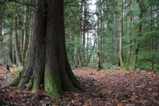
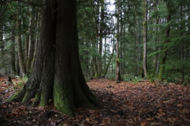
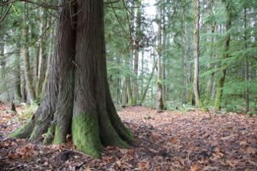
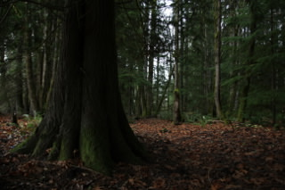
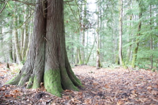

2012-11-30T07:47:39Z
The Quick & Dirty HDR Tutorial (With Free Software!)
{kind=link}
If you are itching to try your hand at HDR photography but don't know where to start then you came to the right place. In this article I will show you a simple HDR workflow with free software that will get you started. But first things first...
What is HDR?
High Dynamic Range photography is a technique that increases the dynamic range between the darkest and lightest areas of an image to levels that are impossible to achieve with current camera technology.
In practical terms, the procedure involves taking several identical pictures at different exposures. These pictures are then fed into the HDR software, which combines them into a single picture with a larger dynamic range.
What are the steps in creating an HDR picture?
There are three main steps in creating an HDR picture:
- Shoot the source pictures
- Create the HDR image
- Tonemap the HDR image
Step 1 is pretty obvious. You can shoot source pictures for HDR processing with any camera that provides manual exposure adjustments, at least in the form of exposure compensation. A camera that has an exposure bracketing function will make the task of shooting the pictures a lot easier. A camera that provides a dedicated bracketing option for HDR will make it even easier. On my Canon DSLR I have installed the Magic Lantern firmware enhancements and use its HDR bracketing option to shoot HDR source images.
Step 2 is a mostly automated step where the HDR software looks at all the source pictures and calculates the HDR image.
Step 3 may not be so obvious. In step 2 a high dynamic range image was generated. The problem is that this image now has a dynamic range that is so large that a computer monitor or printer cannot display, because these devices do not have enough individual intensity settings to cover the larger range. To be able to display or print the image an additional process must be applied, one that compresses the HDR image back to LDR (low dynamic range). This gives much higher quality compared to an image that was born as LDR, because the tone mapping algorithm has a lot of data to play with and can be smart about how all the LDR pixel intensities are distributed. There are many tone mapping algorithms available each creating a different look, so this process lends itself to a lot of experimentation and personal taste.
Okay, enough theory... Let's do this!
For this tutorial I'll be using a Canon EOS 60D DSLR camera with Magic Lantern version 2.3 installed. If you have another brand, or if you prefer to not install Magic Lantern on your Canon DSLR the you will need to learn how to use the exposure bracketing function in your camera to take the pictures.
Magic Lantern has a dedicated bracketing option for HDR that is excellent. This is what I had to do to setup the camera for this shoot:
- Open the Magic Lantern menu (on the 60D this is done by pressing the "delete" button)
- Navigate to the "Shoot" menu
- Navigate to the "HDR Bracketing" submenu
- Open the HDR Bracketing settings window (on the 60D you press the "Q" button for this)
- Configure the HDR bracketing options
Here is a screenshot of the HDR Bracketing window with the settings I'm going to use:
The Frames: Autodetect option is awesome. Instead of selecting a fixed number of pictures, Magic Lantern starts taking pictures at different exposures and analyzes the pictures in real time to determine when it has captured the whole dynamic range. So you just press the shutter button and wait for Magic Lantern to take as many pictures as are deemed necessary. If you prefer to set a number of images then Magic Lantern can shoot from 2 to 9 pictures in each set (the original Canon firmware can only do 3).
The EV increment indicates what is the exposure change from picture to picture. Typically you will use 1EV or 2EV here. The larger the increment the less pictures need to be taken to cover a given exposure range, but the chance of not having good coverage of all the intensity areas of the image increases.
The Sequence, 2-second delay and ISO Shifting are additional configuration options that I rarely mess with. See the Magic Lantern web site for information about them if you are interested.
The Post scripts can be very useful. This option generates a script that does post-processing on the set of images. In this case I'm generating a script that aligns the pictures and then applies Enfuse to them (an alternative to HDR to obtain LDR images with a seemingly higher than possible dynamic range, I have blogged about it a while ago). We are not going to use the script for this purpose though. I have found that it is extremely valuable to have Magic Lantern generate a post script not because I want to run the script but because each script contains the list of images in the bracketed set. If you shoot several HDR pictures, then looking at these generated scripts you can easily find out which images belong to each set.
For this tutorial I'm going to use a set of pictures I took a few days ago in a forest near Mt. Rainer in Washington State. I had the HDR bracketing configured as above, with the camera set to Aperture-Priority, as this forces Magic Lantern to bracket on the shutter speed and keep a constant depth of field. I shot the set handheld as I did not have a tripod with me at the time. These are the five pictures that I shot:
|  |
|  |
|  |
|  |  |
Since my bracketing was set to shoot at 1EV intervals the above pictures are 0EV, -1EV, +1EV, -2EV and +2EV.
If you are not sure what would be a good subject for an HDR image here are some ideas:
- On a bright day, shoot a landscape that includes land and sky with the sun to your side.
- From inside a room shoot a wall with a window or open door facing outside.
- From outside shoot a wall with window or an open door facing inside.
- Shoot a scene that is partially illuminated by the sun, with the other part in shadows.
- Do not shoot dynamic scenes (i.e. people, animals, moving cars, etc.), you want to shoot static scenes that will not change much from one picture to the next, or else it gets much more complicated to merge exposures.
This is really all that is needed during the shooting phase, once you capture the bracketed set you are ready to start HDR processing.
Luminance HDR
To generate the HDR image I'm going to use the open source Luminance HDR software. This application runs on Windows, Mac OS X and Linux.
After launching the software you just click on the "New HDR Image" button to open the HDR Creation Wizard:
The images are dropped on the left side list. On the right bottom there is an Autoalign images checkbox which is a must if the images were taken handheld. If you shot your images with a sturdy tripod then you can save time and skip the alignment.
After clicking Next the program works for a while doing the image alignment. After the alignment is done a new window opens showing how the images were aligned, and giving some options to manually improve the alignment. I don't mess with manual alignment, I trust the program to do a good job and if it can't align my pictures I take it as an indication that I need to be more steady when I shoot. So I just click Next again to dismiss the manual alignment window.
There is a final window that asks you to pick a profile. I haven't experimented much with the different profiles, I typically leave this window set to defaults and press Finish.
After some additional churn, the HDR image is displayed:
The image that you get will look pretty bad. The colors will likely be washed up, and it may look too dark or too light. Recall that HDR images cannot be displayed in a monitor directly, because they contain more pixel intensities than the monitor can display. Luminance is showing a portion of the dynamic range of the image and that is why this image does not look too good.
The controls on the left side are the tone mapping operators. These are used to convert the HDR data back into LDR for proper display and/or printing. The thumbnails on the right side show small previews of all the available tone mapping operators.
Here is where you potentially spend hours experimenting with all the different operators and their settings to find the a processing method that you like. I have generated the picture that opens this article with the settings below:
To generate a tone mapped image you select the desired operator and its settings and then press the Tonemap button. This opens a new window with the rendered image. When you are trying things it is useful to render a smaller image, as the full resolution image takes a while to render. The render size can be set in the Result size setting.
To obtain the final image I saved the LDR image from Luminance and brought it into Lightroom. I cropped the image to a widescreen aspect ratio to make it a bit more interesting, I applied a vignette and added a bit of contrast.
As a way of comparison, below is the original source image at 0EV processed in Lightroom in a similar manner:

You can click on this image to see a larger version and then cycle through the examples to compare them.
Note how there is a lot of detail lost in this image that is clearly seen in the tone mapped HDR image at the top.
Finally, this is another tone mapping of the same HDR image. In this version I started from the settings above and increased the Detail parameter to 10.0. This gave the image a pretty weird look that I'm sure some people will find interesting:
{kind=link}
There are millions of different ways to tone map an HDR image, and I encourage you to play with all the operators available in Luminance to find the looks that you like. As a starting point, you can consult this page for some information on each tone map operator and its arguments.
I hope this tutorial gave you enough to start playing with HDR Photography. If you have any questions you are more than welcome to write them below in the comments area.
Happy shooting,
Miguel
#1 Andreas said 2012-11-30T18:31:28Z
Great post! Thank you very much!
#2 Michael said 2012-12-05T18:24:52Z
This is a great post! Thank you so much for all of the detailed explanations of camera and software settings.
#3 James Wood said 2012-12-25T15:38:49Z
Nice easy to follow tutorial many thanks
#4 VV said 2013-08-09T05:14:46Z
Awesome :)
#5 ayiahmad said 2013-12-12T08:29:31Z
Nice easy to follow tutorial many thanks
#6 Mario said 2013-12-16T08:24:25Z
I can't find the Magic Lantern generated post scripts in the SD card! On Windows I only see th image files, but nothing else... Qhere does ML stores the script files? Thanks!
#7 Miguel Grinberg said 2013-12-16T15:49:47Z
@Mario: check that the "Post Scripts" option in the HDR menu is set correctly. Can't think of any other reason why the scripts are not written out.